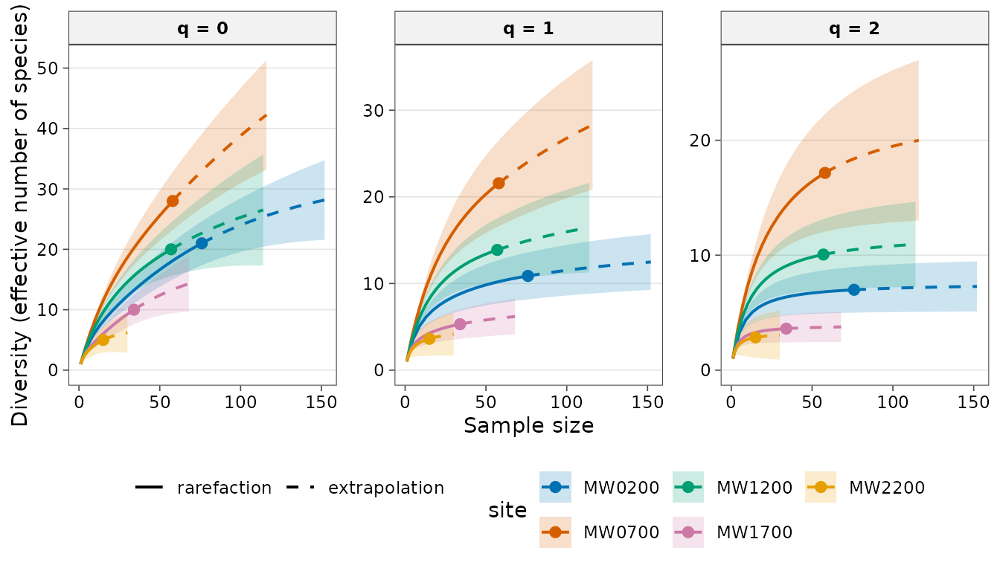
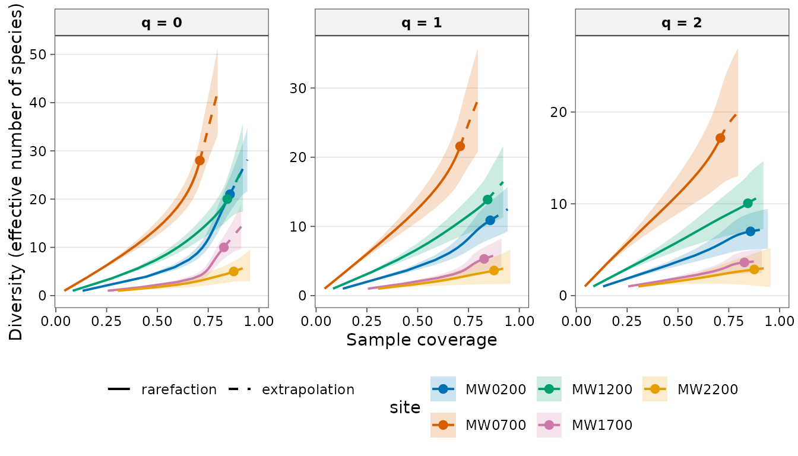
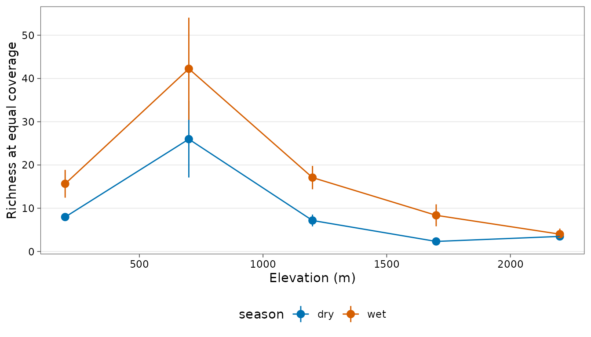

library(tidydiversity)
library(dplyr)
#>
#> Attaching package: 'dplyr'
#> The following objects are masked from 'package:stats':
#>
#> filter, lag
#> The following objects are masked from 'package:base':
#>
#> intersect, setdiff, setequal, union
library(ggplot2)
set.seed(42)The concept
Alpha diversity is the diversity within one sample or site. Counting species is the obvious measure, but the count depends on how hard you looked: a second day of sampling always adds species. Two ideas solve this:
-
Hill numbers put richness, Shannon and Simpson
diversity on one scale, the effective number of species: the
number of equally common species that would give the same diversity. The
order
qsets how much rare species count (q = 0 all equally, q = 1 in proportion to their frequency, q = 2 mostly the common ones). -
Sample coverage is the estimated proportion of the
community’s individuals (or occurrences) that belong to species already
in the sample. It is estimated from the singletons (
f1, species seen once) and doubletons (f2): many singletons mean many species still unseen. Comparing sites at equal coverage compares them at equal completeness, which is fairer than comparing at equal sample size (Chao and Jost 2012).
The examples use png_ants: ants recorded at nutrient
baits along the Mt Wilhelm elevational gradient in Papua New Guinea, in
the dry and wet seasons (Moses et al. 2023). Each bait at which a
species was found counts as one occurrence.
Hill numbers
Hill numbers express diversity as an effective number of species.
Order q = 0 is richness, q = 1 weights species
by their frequency and q = 2 emphasises the dominant
species.
div_hill(png_ants, q = c(0, 1, 2), .by = season)
#> # A tibble: 30 × 5
#> season site q n diversity
#> <chr> <chr> <dbl> <dbl> <dbl>
#> 1 dry MW0200 0 47 16
#> 2 dry MW0200 1 47 12.3
#> 3 dry MW0200 2 47 9.91
#> 4 dry MW0700 0 23 15
#> 5 dry MW0700 1 23 11.8
#> 6 dry MW0700 2 23 8.67
#> 7 dry MW1200 0 29 13
#> 8 dry MW1200 1 29 9.37
#> 9 dry MW1200 2 29 6.73
#> 10 dry MW1700 0 17 5
#> # ℹ 20 more rowsHow to read it. n is the number of
occurrences, diversity the observed Hill number. Diversity
always falls from q = 0 to q = 2; the steeper the fall, the more uneven
the community (a few species dominate). At 200 m in the dry season, 16
species are equivalent to 12.3 equally common ones (q = 1) and 9.9
dominant ones (q = 2): a fairly even community.
Sample coverage
Raw counts depend on sampling effort. Sample coverage estimates how complete each sample is.
div_coverage(png_ants, .by = season)
#> # A tibble: 10 × 7
#> season site n s_obs f1 f2 coverage
#> <chr> <chr> <dbl> <int> <int> <int> <dbl>
#> 1 dry MW0200 47 16 5 5 0.898
#> 2 dry MW0700 23 15 12 1 0.482
#> 3 dry MW1200 29 13 7 3 0.766
#> 4 dry MW1700 17 5 1 2 0.953
#> 5 dry MW2200 13 6 3 1 0.781
#> 6 wet MW0200 76 21 11 5 0.857
#> 7 wet MW0700 58 28 17 3 0.709
#> 8 wet MW1200 57 20 9 3 0.844
#> 9 wet MW1700 34 10 6 2 0.827
#> 10 wet MW2200 15 5 2 1 0.876How to read it. s_obs is the observed
richness, f1 and f2 the singletons and
doubletons, and coverage the estimated completeness. Most
samples are 70-95% complete, but the dry-season sample at 700 m reaches
only 48%: 12 of its 15 species were found once. Its observed richness is
therefore the least reliable and should not be compared directly with
the others.
Asymptotic estimates
div_estimate() gives Chao1 richness, the Chao et
al. (2013) Shannon estimator and the unbiased Simpson estimator, with
bootstrap intervals.
div_estimate(png_ants, .by = season, nboot = 50) |>
filter(q == 0)
#> # A tibble: 10 × 8
#> season site q observed estimate se lower upper
#> <chr> <chr> <dbl> <dbl> <dbl> <dbl> <dbl> <dbl>
#> 1 dry MW0200 0 16 18.4 3.55 16.3 35.7
#> 2 dry MW0700 0 15 83.9 33.6 42.9 185.
#> 3 dry MW1200 0 13 20.9 11.0 14.0 73.2
#> 4 dry MW1700 0 5 5.24 1.48 5.01 15.2
#> 5 dry MW2200 0 6 10.2 4.39 6.76 28.7
#> 6 wet MW0200 0 21 32.9 15.7 22.7 106.
#> 7 wet MW0700 0 28 75.3 44.7 37.9 255.
#> 8 wet MW1200 0 20 33.3 21.1 21.5 140.
#> 9 wet MW1700 0 10 18.7 8.38 11.8 52.5
#> 10 wet MW2200 0 5 6.87 1.98 5.34 15.2How to read it. estimate is the
estimated true richness (Chao1), a lower bound, with a bootstrap
interval. Where coverage is high (200 m dry, 1700 m dry) it is close to
the observed richness. Where it is low, the estimate rises far above the
observation and the interval becomes very wide: at 700 m in the dry
season, 15 observed species suggest 84 (interval 45-176). Such estimates
show that many species are missing, but they are too uncertain to rank
sites; use standardised estimates instead.
Classic estimators (EstimateS and SpadeR)
Many studies, and many reviewers, still report the estimators of
EstimateS: ACE and ICE, the jackknives, the bootstrap, and the improved
Chao estimators. div_richness() gives all of them, each
with a bootstrap standard error and interval, and the values equal
SpadeR’s. Here, for the incidence data (baits as sampling units) at 700
m:
set.seed(1)
rich <- div_richness(png_ants, unit = bait, n_units = baits, .by = season, nboot = 100)
rich |>
filter(site == "MW0700") |>
select(season, estimator, observed, estimate, se, lower, upper)
#> # A tibble: 16 × 7
#> season estimator observed estimate se lower upper
#> <chr> <chr> <int> <dbl> <dbl> <dbl> <dbl>
#> 1 dry chao2 15 85.8 42.0 39.1 223.
#> 2 dry chao2_bc 15 47.4 27.9 22.5 155.
#> 3 dry ichao2 15 88.5 42.5 40.7 225.
#> 4 dry ice 15 66.0 45.8 26.3 245.
#> 5 dry ice1 15 132. 179. 28.7 1022.
#> 6 dry jack1 15 26.8 6.26 19.4 46.3
#> 7 dry jack2 15 37.4 9.35 25.2 64.2
#> 8 dry bootstrap 15 19.6 4.34 15.9 37.0
#> 9 wet chao2 28 75.4 53.5 36.0 308.
#> 10 wet chao2_bc 28 61.4 29.0 35.7 173.
#> 11 wet ichao2 28 84.4 55.4 39.3 310.
#> 12 wet ice 28 55.8 17.4 37.0 114.
#> 13 wet ice1 28 72.3 36.7 38.7 211.
#> 14 wet jack1 28 44.7 7.06 35.6 65.0
#> 15 wet jack2 28 58.3 10.6 43.5 87.1
#> 16 wet bootstrap 28 34.8 5.07 29.8 53.1How to read it. Every estimator agrees that many species were missed at 700 m, but they disagree strongly on how many: in the dry season, from 20 (bootstrap) to 132 (ICE-1). That spread is itself the result: with 15 species, most found at one bait, the data cannot pin down the true richness. The bootstrap and first-order jackknife are known to underestimate when sampling is this incomplete, and ACE-1 and ICE-1 to be unstable (note the huge interval). Report Chao2 (or iChao2 when rare species dominate) as the lower bound, and say that the sample was too incomplete for a precise estimate.
Fisher’s alpha, the log-series index common in tropical studies, is less sensitive to sample size than richness:
div_fisher_alpha(png_ants, .by = season)
#> # A tibble: 10 × 5
#> season site n s_obs alpha
#> <chr> <chr> <dbl> <int> <dbl>
#> 1 dry MW0200 47 16 8.55
#> 2 dry MW0700 23 15 18.7
#> 3 dry MW1200 29 13 9.05
#> 4 dry MW1700 17 5 2.39
#> 5 dry MW2200 13 6 4.32
#> 6 wet MW0200 76 21 9.60
#> 7 wet MW0700 58 28 21.3
#> 8 wet MW1200 57 20 11.0
#> 9 wet MW1700 34 10 4.77
#> 10 wet MW2200 15 5 2.63Like the coverage-standardised richness below, it is highest at 700 m and lowest at 1700 m and above in both seasons.
How much more sampling is needed?
div_effort() turns the estimates into a plan: how many
more sampling units (here baits) each site needs to reach a target
coverage, or to detect a target fraction of its estimated richness (Chao
et al. 2009).
effort <- div_effort(
png_ants,
unit = bait, n_units = baits, .by = season,
coverage = 0.9, fraction = 0.9
)
effort |> select(season, site, coverage_now, s_obs, s_est, target, additional)
#> # A tibble: 20 × 7
#> season site coverage_now s_obs s_est target additional
#> <chr> <chr> <dbl> <int> <dbl> <chr> <dbl>
#> 1 dry MW0200 0.897 16 18.5 coverage 1
#> 2 dry MW0200 0.897 16 18.5 fraction 9
#> 3 dry MW0700 0.480 15 85.8 coverage 585
#> 4 dry MW0700 0.480 15 85.8 fraction 749
#> 5 dry MW1200 0.762 13 21.0 coverage 61
#> 6 dry MW1200 0.762 13 21.0 fraction 93
#> 7 dry MW1700 0.945 5 5.25 coverage 0
#> 8 dry MW1700 0.945 5 5.25 fraction 0
#> 9 dry MW2200 0.772 6 10.4 coverage 74
#> 10 dry MW2200 0.772 6 10.4 fraction 129
#> 11 wet MW0200 0.857 21 32.9 coverage 24
#> 12 wet MW0200 0.857 21 32.9 fraction 85
#> 13 wet MW0700 0.709 28 75.4 coverage 180
#> 14 wet MW0700 0.709 28 75.4 fraction 309
#> 15 wet MW1200 0.844 20 33.3 coverage 40
#> 16 wet MW1200 0.844 20 33.3 fraction 124
#> 17 wet MW1700 0.826 10 18.8 coverage 50
#> 18 wet MW1700 0.826 10 18.8 fraction 138
#> 19 wet MW2200 0.869 5 6.97 coverage 17
#> 20 wet MW2200 0.869 5 6.97 fraction 62How to read it. coverage_now is the
completeness of the 60 baits already set, s_est the
estimated richness (Chao2), and additional the further
baits needed for each target. For 90% coverage, most sites need fewer
than 75 more baits, and two are already there or nearly so. The
exception is 700 m, the richest elevation: it needs 180 more baits in
the wet season and 585 in the dry season, where 12 of its 15 species
were found at one bait. A far larger effort, or a different method,
would be needed there. Answers far beyond two to three times the current
effort are order-of-magnitude guides, because extrapolation that far is
uncertain.
Rarefaction and extrapolation
div_rarefy() interpolates each sample down to smaller
sizes and extrapolates up to twice its size. The values match the iNEXT
package.
curves <- png_ants |>
filter(season == "wet") |>
div_rarefy(q = c(0, 1, 2), nboot = 30)
curves
#> # A tibble: 570 × 8
#> site q m method diversity coverage lower upper
#> <chr> <dbl> <dbl> <chr> <dbl> <dbl> <dbl> <dbl>
#> 1 MW0200 0 1 rarefaction 1 0.132 1 1.00
#> 2 MW0200 0 5 rarefaction 3.92 0.445 3.64 4.20
#> 3 MW0200 0 9 rarefaction 5.90 0.585 5.27 6.53
#> 4 MW0200 0 13 rarefaction 7.44 0.655 6.49 8.39
#> 5 MW0200 0 17 rarefaction 8.75 0.695 7.51 9.99
#> 6 MW0200 0 21 rarefaction 9.93 0.721 8.43 11.4
#> 7 MW0200 0 25 rarefaction 11.0 0.740 9.29 12.7
#> 8 MW0200 0 29 rarefaction 12.0 0.754 10.1 14.0
#> 9 MW0200 0 33 rarefaction 13.0 0.766 10.9 15.1
#> 10 MW0200 0 38 rarefaction 14.1 0.780 11.8 16.5
#> # ℹ 560 more rows
autoplot(curves)
How to read it. Solid lines are interpolated (rarefied) diversity for smaller samples, the point marks the actual sample, and dashed lines are extrapolated up to twice the sample size. A curve still rising steeply at its end has many species left to find; a curve that flattens is nearly complete. Curves for q = 1 and 2 flatten much sooner than for q = 0, because rare species, which are the last to be found, count little in them.
Plotting against coverage shows how complete each sample is:
autoplot(curves, x = "coverage")
Read the curves at the same position on the x-axis to compare sites at equal completeness.
Fair comparisons
Compare sites at equal completeness with
div_standardise(). With no level given, each group is
standardised to the lowest coverage that its sites reach at twice their
sample size.
std <- div_standardise(png_ants, .by = season, nboot = 50)
std
#> # A tibble: 30 × 11
#> season site q m method target coverage diversity se lower upper
#> <chr> <chr> <dbl> <dbl> <chr> <dbl> <dbl> <dbl> <dbl> <dbl> <dbl>
#> 1 dry MW0200 0 11.6 raref… 0.565 0.565 7.96 0.410 7.16 8.77
#> 2 dry MW0200 1 11.6 raref… 0.565 0.565 7.10 0.459 6.20 8.00
#> 3 dry MW0200 2 11.6 raref… 0.565 0.565 6.24 0.474 5.31 7.17
#> 4 dry MW0700 0 46.0 extra… 0.565 0.565 26.0 4.53 17.1 34.8
#> 5 dry MW0700 1 46.0 extra… 0.565 0.565 17.9 5.38 7.32 28.4
#> 6 dry MW0700 2 46.0 extra… 0.565 0.565 10.5 5.20 0.314 20.7
#> 7 dry MW1200 0 11.0 raref… 0.565 0.565 7.17 0.695 5.81 8.53
#> 8 dry MW1200 1 11.0 raref… 0.565 0.565 6.09 0.819 4.49 7.70
#> 9 dry MW1200 2 11.0 raref… 0.565 0.565 5.04 0.857 3.36 6.72
#> 10 dry MW1700 0 3.07 raref… 0.565 0.565 2.32 0.182 1.97 2.68
#> # ℹ 20 more rowsHow to read it. All sites of a season are brought to
one coverage (0.565 in the dry season and 0.796 in the wet season):
method says whether a site was rarefied down or
extrapolated up to reach it, and m the sample size at which
this happens. These estimates, not the observed counts, are the ones to
compare.
std |>
left_join(distinct(png_ants, site, elevation), by = "site") |>
filter(q == 0) |>
ggplot(aes(elevation, diversity, colour = season)) +
geom_pointrange(aes(ymin = lower, ymax = upper)) +
geom_line() +
labs(x = "Elevation (m)", y = "Richness at equal coverage") +
scale_colour_tidydiversity() +
theme_tidydiversity()
Interpretation. At equal coverage, ant richness peaks at 700 m in both seasons and is lowest above 1700 m. Each site is richer in the wet season, when more ants forage at baits. The 700 m estimates were extrapolated and have the widest intervals, so the peak is clear but its height uncertain. The observed counts alone would have hidden the peak in the dry season, where 700 m had the least complete sample.
How to report it
Ant richness was compared among elevations at equal sample coverage (Chao and Jost 2012), separately for each season, with tidydiversity. Samples were rarefied or extrapolated to the lowest coverage reached at twice the observed sample size (0.56 in the dry and 0.8 in the wet season); 95% intervals are from 50 bootstrap replicates. Report the sample coverage of each site in a supplementary table.
References
Chiu, C.-H., Wang, Y.-T., Walther, B. A. and Chao, A. (2014). An improved nonparametric lower bound of species richness via a modified Good-Turing frequency formula. Biometrics, 70, 671-682.
Chao, A., Colwell, R. K., Lin, C.-W. and Gotelli, N. J. (2009). Sufficient sampling for asymptotic minimum species richness estimators. Ecology, 90, 1125-1133.
Chao, A. and Jost, L. (2012). Coverage-based rarefaction and extrapolation: standardizing samples by completeness rather than size. Ecology, 93, 2533-2547.